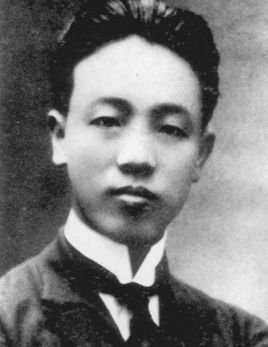

赵世炎(1901年4月13日 -1927年7月19日)，字琴生

赵世炎，重庆酉阳人。中国共产党早期杰出的无产阶级革命家、卓越的马克思主义理论传播者、著名的工人运动领袖、中国共产党的创始人之一。
赵世炎（1901年4月13日—1927年7月19日），字琴生，号国富，笔名施英，重庆市酉阳土家族苗族自治县人。中国共产党早期杰出的无产阶级革命家、卓越的马克思主义理论传播者、著名的工人运动领袖、中国共产党的创始人之一。